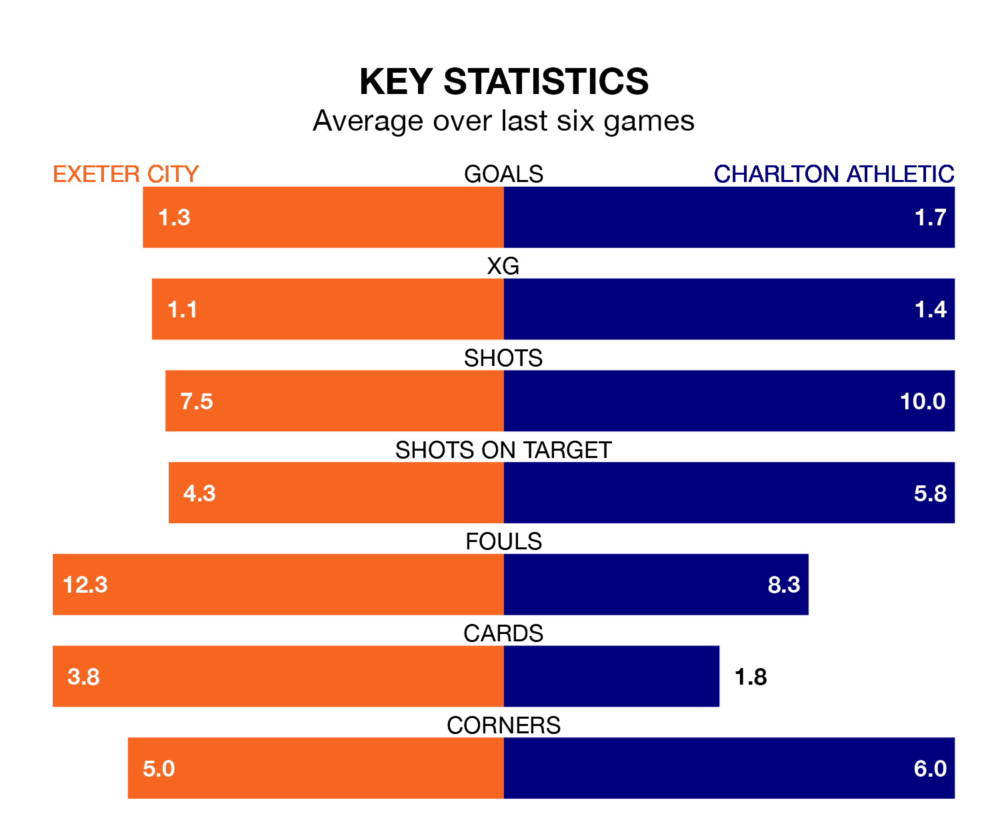

Charlton Athletic face Exeter City on Friday seeking to protect their formidable unbeaten run in EFL League One.
The Addicks are unbeaten in eight, with three wins and five draws, ahead of the 3pm kick-off.
They face an Exeter team who have won three and drawn two over the same number of games.
In Alfie May, Charlton have the league's most on-form striker so far this season. He has notched 21 goals in 36 appearances.
His goal rate of one every 143 minutes is quicker than that of Sonny Cox, Exeter's top scorer with a goal every 285 minutes, and a total of five goals in 28 games.
With 33 goals in 39 games so far this season, City are scoring at below the league average rate with 0.8 goals per game. And they are conceding at an average rate, letting in 52 goals at a rate of 1.3 per game.
Athletic, meanwhile, are above average scorers, with 1.5 goals per game, compared to a league average of 1.3. They have also conceded 1.5 goals per game.
The Addicks are 17th in the table after 39 games, of which they have won 10 and drawn 15, earning 45 points.
The hosts are one place ahead of the away team in 16th, with 13 wins and eight draws putting them on 47 points.
In the last three years, Exeter and Charlton have played each other on three occasions. Charlton won all of them.
Their last meeting was on October 3, when Charlton won 4-1 at home.
Exeter's last match was on March 16, a 1-0 win against Burton Albion, with Reece Cole getting the goal for Exeter.
Charlton drew 1-1 with Fleetwood Town last time out, also on March 16, with May on the scoresheet.
Updated: 10:19 (UTC), 22/03/24